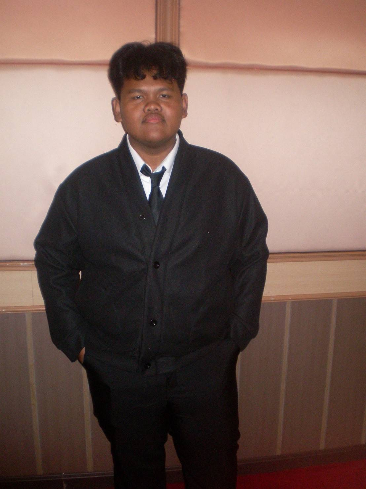
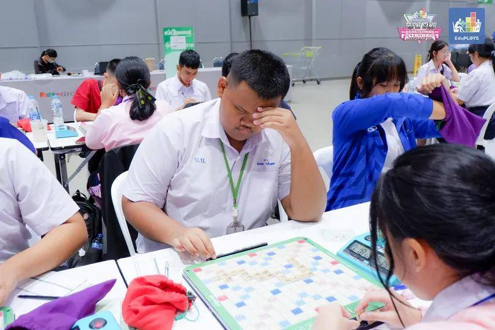
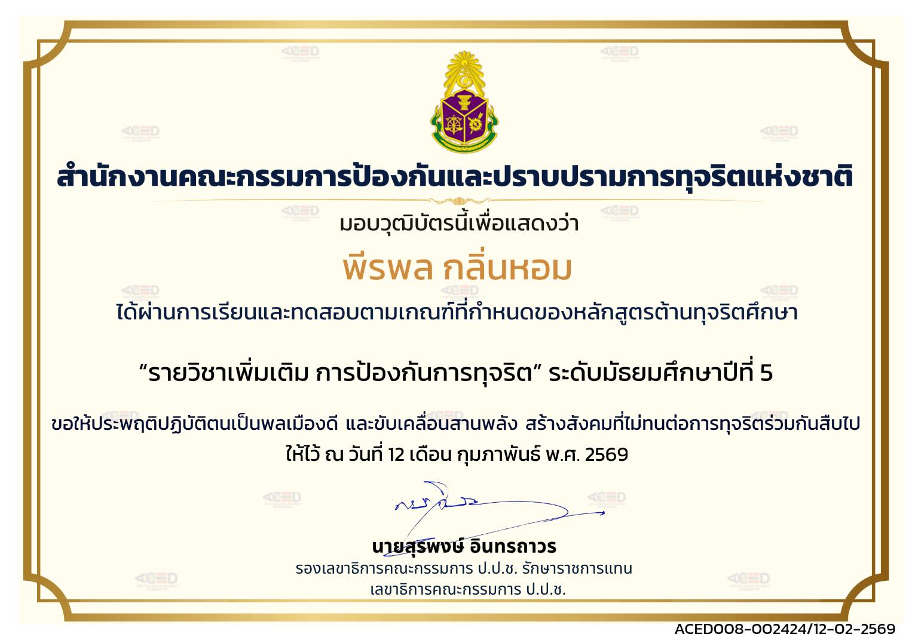

ภาษาอังกฤษ
มีความสนใจและตั้งใจพัฒนาทักษะภาษาอังกฤษอย่างต่อเนื่อง
PERSONAL PORTFOLIO · 2026
นักเรียนชั้นมัธยมศึกษาปีที่ 6 ผู้ชอบเรียนรู้อยู่เสมอ สนใจภาษาอังกฤษ และตั้งเป้าหมายในการพัฒนาตนเองสู่การเป็นล่ามในอนาคต

01 · ABOUT ME
สวัสดีครับ ผมชื่อนายพีรพล กลิ่นหอม ชื่อเล่นกล้วย กำลังศึกษาอยู่ชั้นมัธยมศึกษาปีที่ 6 โรงเรียนบ้านบึง“อุตสาหกรรมนุเคราะห์” จังหวัดชลบุรี
ผมเป็นคนที่เข้ากับผู้อื่นได้ง่าย ชอบเรียนรู้สิ่งใหม่ ๆ และมีความสนใจในภาษาอังกฤษ นอกจากการเรียนแล้ว ผมชอบร้องเพลง ซึ่งเป็นอีกหนึ่งกิจกรรมที่ผมสนุกกับการฝึกฝน และพัฒนาตัวเอง
จุดแข็งของผมคือความอดทนและการไม่ยอมแพ้ เมื่อเจอสิ่งที่ยาก ผมพยายามเรียนรู้และฝึกฝนต่อไป เป้าหมายในอนาคตคือการเป็น ล่าม จึงตั้งใจพัฒนาทักษะด้านภาษาให้เก่งขึ้นอย่างต่อเนื่อง
02 · STRENGTHS
มีความสนใจและตั้งใจพัฒนาทักษะภาษาอังกฤษอย่างต่อเนื่อง
เป็นคนเข้ากับผู้อื่นได้ง่าย และพร้อมเรียนรู้จากผู้คนรอบตัว
พยายามต่อเนื่องแม้ต้องเจอกับความยากหรือความท้าทาย
ชอบเรียนรู้สิ่งใหม่ ๆ และนำประสบการณ์มาพัฒนาตัวเอง
03 · SELECTED WORKS
แม้ผลงานจะมีไม่มาก แต่ทุกประสบการณ์สะท้อนความสนใจด้านภาษาและการพัฒนาตัวเอง

เข้าร่วมการแข่งขัน Crossword ในช่วงมัธยมศึกษาปีที่ 5 เป็นประสบการณ์ที่ได้ฝึกคำศัพท์ภาษาอังกฤษ การคิดวิเคราะห์ และการตัดสินใจภายใต้เวลาที่จำกัด
ผลการเข้าร่วม · ได้รับเกียรติบัตรการเข้าร่วม

ผ่านการเรียนและทดสอบตามเกณฑ์ของหลักสูตร “รายวิชาเพิ่มเติม การป้องกันการทุจริต” ระดับมัธยมศึกษาปีที่ 5 ซึ่งช่วยเสริมความตระหนักด้านความซื่อสัตย์ ความรับผิดชอบ และการเป็นสมาชิกที่ดีของสังคม
วันที่ได้รับ · 12 กุมภาพันธ์ พ.ศ. 2569
เข้าร่วมการแข่งขัน Crossword ครั้งล่าสุดในระดับ ม.6 และทำอันดับได้ดีที่สุดนับตั้งแต่เริ่มแข่งขัน คืออันดับที่ 12 สะท้อนถึงความพยายามและพัฒนาการจากประสบการณ์การแข่งขันที่ผ่านมา
Personal best · อันดับ 12
MY DIRECTION
“ผมเชื่อว่าการพัฒนาตัวเองเกิดขึ้นจากการเรียนรู้และการไม่ยอมแพ้”
เป้าหมายต่อไปของผมคือการพัฒนาภาษาอังกฤษให้ดียิ่งขึ้น และก้าวไปสู่การเป็นล่ามในอนาคต
04 · CONTACT
ส่วนนี้สามารถเติมช่องทางติดต่อจริงได้ภายหลัง
GITHUB
github.com/s34863